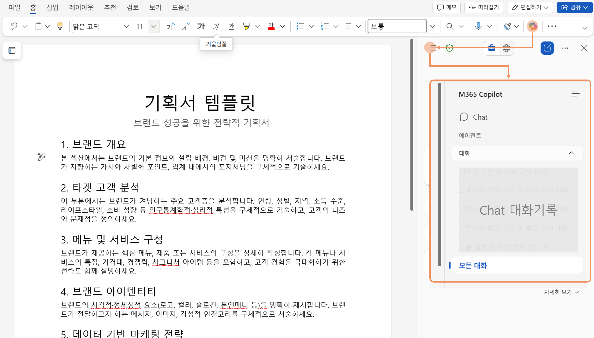

In this quest, you will compile everything—from market analysis and restaurant concept to menu—into a brand planning document.
- Open Word and create a new blank document.
- Click the Copilot icon in the main text area, or press Alt+I to open the prompt input pane.

- Enter the sample prompts below. Modify the parts in [square brackets] as you like.
- Creatively change the [bracketed] content and regenerate until you are satisfied.
- You can create or revise the content for each agenda item using Word Copilot. You can provide your own prompts or use the built-in suggestions to modify the text.

- You can also write content through conversation with Copilot Chat, or pull content from your chat history. Not just in Word, but from all Copilot Chat conversations, you can review past responses and "Add to document" directly. You can insert images generated in chat or charts created in Excel Copilot, and reuse materials such as menus created in previous stages. 
Compile the content to create a draft report. Present an agenda and structure the report to match that template.
I want to write a planning document for my restaurant. Suggest an agenda to include.
Create a planning document template with the following agenda: [1. Brand Overview, 2. Target Customer Analysis, 3. Menu and Service Composition, 4. Brand Identity, 5. Data-Driven Marketing Strategy, 6. Goals and Action Plan].
Write the data-driven marketing strategy section in more detail. Break it down into the following: [1. Survival Forecast, 2. Reasons for Location Selection, 3. Competitive Analysis and Differentiation Strategy].
Fill in the detailed content for each agenda item.
(Click the Copilot icon in a blank area) I want to write a brand overview. My restaurant is (idea description). Draft a brand overview that emphasizes (key differentiators). Use professional terms and keep it concise.
(Select a portion of the written text and click the Copilot icon) Summarize this content concisely and rewrite it using bullet points.